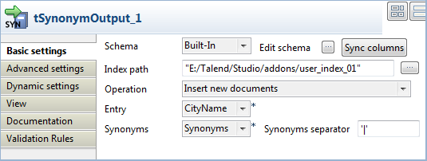
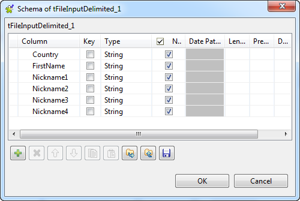

Warning
This component will be available in the Palette of the studio on the condition that you have subscribed to any Talend Platform product.
|
Component family |
Data Quality | |
|
Function |
tSynonymOutput creates a Lucene index and feed it with entries as well as the related synonyms it receives. For further information about how to access and manage the words and the reference entries (documents) of an existing synonym index using the synonym index editor, see the Talend Data Quality User Guide. For further information about available synonym indexes, see the appendix about data synonym dictionaries in the Talend Data Quality User Guide. NoteThe synonym similarity computation is enhanced since the Studio version 5.1. If your indexes were created with version 5.0 or lower and you need to handle them using this enhanced computation method, you have to update these indexes by executing the IndexMigrator.jar file downloadable from: http://talendforge.org/svn/top/trunk/org.talend.dataquality.standardization.migration/dist/IndexMigrator.jar. The command to be used to run this jar file is: | |
|
Purpose |
tSynonymOutput creates synonym indexes that some components like tStandardizeRow or tSynonymSearch can refer to when processing data. | |
|
Basic settings |
Schema and Edit schema |
A schema is a row description, i.e., it defines the number of fields that will be processed and passed on to the next component. The schema is either built-in or remote in the Repository. |
|
|
|
Built-in: The schema will be created and stored locally for this component only. Related topic: see Talend Data Integration Studio User Guide. |
|
|
|
Repository: The schema already exists and is stored in the Repository, hence can be reused in various projects and job designs. Related topic: see Talend Data Integration Studio User Guide. |
|
|
Index path |
Type in or browse to the location where you want to create and store the synonym index. If the specified directory does not exist, the component will create it. |
|
|
Operations |
Select the index operation to be performed in directory given in the Index path field. (Delete and) initialize an index: creates a new index and then fills it with the entries and the corresponding synonyms; if an index already exists, deletes it before creating a new one. Insert new documents: inserts new entries and synonyms into the given existing index. Duplicates are not inserted. Update existing documents and insert if not existing: updates existing entries and synonyms, and adds new ones to the given index. Delete existing documents: deletes the entries with their synonyms if the same entries are identified in the incoming data flow from the preceding component. |
|
|
Entry |
Select the column you need to insert to create the entries of the given index. These entries are used as reference to any associated synonyms to be inserted alongside in this given index. |
|
|
Synonyms |
Select the column you need to insert to create the synonyms corresponding to different index entries. |
|
|
Synonym separator |
Type in the separator to be used to separate the synonyms of each
index entry. By default, this separator is |
|
Advanced settings |
tStatCatcher Statistics |
Select this check box to collect log data at the Job and the component levels. |
|
Connections |
|
Outgoing links (from one component to another): Row: Main; Reject Trigger: Run if; On Component Ok; On Component Error.
Incoming links (from one component to another): Row: Main; Reject
For further information regarding connections, see Talend Data Integration Studio User Guide. |
|
Usage |
This component needs incoming data from the preceding component for creating or updating indexes. | |
In this scenario, a three-component Job creates an index of the standardized city names that provides references to the city synonyms used in the client data of an enterprise.
To create this index, you need a source file to provide the city names and their corresponding synonyms. In this scenario, this is a .csv file and reads as follows:
CityName;Synonyms North Reading;Redding|North Reading|N. Reading|N Reading|N Redding|NR Young America;YA|Young America Dedham;Dedham|dedham|deadham New York;NY|New York
Two columns are found in this file:
the left one is the CityName column which holds the standard city names as reference data.
the right one is the Synonyms column which holds various synonyms collected across the client data of this enterprise.
The three components used in this Job are:
tFileInputDelimited: this component loads data from the source file and inputs them to tSynonymOutput.
tSynonymOutput: this component creates the index of interest in this scenario and feed it with the synonyms given in the source file.
tLogRow: this component lists the data that have been inserted into the newly created index.

To replicate this scenario, proceed as follows:
Drop tFileInputDelimited, tSynonymOutput and tLogRow from the Palette onto the design workspace.
Note
You can change the displayed name of each of these component as what has been done for the tFileInputDelimited component, which appears as CityNames in this scenario. For further information, see Talend Data Integration Studio User Guide.
Right-click the tFileInputDelimited (CityNames) component to open the contextual menu.
From this menu, select Row > Main.
Click the tSynonymOutput component to create an connection between these two components.
Do the same thing to connect tSynonymOutput to tLogRow.
Double click tFileInputDelimited (CityNames) to open its Basic settings view.

In the File name/Stream field, specify the path to the input file.
Click the [...] button next to Edit schema to open the [Schema] dialog box, click the [+] button twice to add two columns, and name them respectively CityName and Synonyms corresponding to the input file structure.
When done, click OK to close the dialog box and propagate the schema setting to the next component.

Note
You can also add this tFileInputDelimited file using the established metadata stored in the Repository. This allows you to use automatically the configuration of the corresponding metadata. For further information about how to create and use this metadata, see Talend Data Integration Studio User Guide.
Double-click tSynonymOutput to open its Basic settings view.
In the Index path field, type in or browse to the location where you need to create the index.
In the Operation field, select the operation you need to perform on this created index as well as the related synonyms. In this example, select (Delete and) initialize an index.
In the Entry field, select the column to be used to receive and store the standard reference data. In the source file used in this scenario, the CityName column is holding the standard city names, so select CityName.
In the Synonyms field, select the column to be used to receive and store the synonyms. In this scenario, select Synonyms.
In the Basic settings view of the tLogRow component, select the Table option for better readable display of the Job execution result.
In this scenario, a four-component Job creates an index storing people names and their relative nicknames.
The source data to be used in this scenario is stored in a .csv file, an extract of which is shown below:
Country;FirstName;Nickname1;Nickname2;Nickname3;Nickname4 France;Anne;Ninon;Annie;Ninette;Ann France;Bernadette;Nad;Netty;Dadette France;Albert;Al France;Alexandre;Alex France;Alfred-Hubert;Alu France;André;Andy France;Didier;Dédé France;Anthony;Anton;Tony;Tonio France;Artus;Artie France;Benoit;Ben France;Catherine;Cate;Katherine;Kathryn France;Charles;Charlie;Charlot;Chuck France;Christophe;Christian;Chris;Kris;Kristof France;Christian;Chris
This data describes people's home country (not to be inserted into the index), first names (reference entries) and frequently used nicknames (synonyms).
The four components used in this Job are:
tFileInputDelimited: this component reads the source data and inputs them to tSynonymOutput.
tMap: this component is used to transform the source data into two separated columns representing the first names and the nicknames, in the meantime, ignoring the people's home country information.
tSynonymOutput: this component creates the index of interest in this scenario and feeds it with the synonyms given in the source file.
tLogRow: this component lists the data that have been inserted into the newly created index.
To replicate this scenario, proceed as follows:
Drop tFileInputDelimited, tMap, tSynonymOutput and tLogRow from the Palette onto the design workspace.
Note
You can change the displayed name of each of these component. For further information, see Talend Data Integration Studio User Guide.
Right-click the tFileInputDelimited component to open the contextual menu, and select Row > Main to connect it with the tMap component.
Do the same thing to connect tMap to tSynonymOutput using Row > Main link.
A dialog box pops up to prompt you to name this link you are creating.

Type in synonyms, for example, then click OK to validate this name and thus close this dialog box.
Continue to connect tSynonymOutput to tLogRow using Row > Main link again.
Procedure 6.12. Configure the data input
Double-click tFileInputDelimited to open its Component view.

In the File name/Stream field, specify the path to the input file.
Click the [...] button next to Edit schema to open the [Schema] dialog box, click the [+] button to add six columns and name them Country, FirstName, Nickname1, Nickname2, Nickname3 and Nickname4 corresponding to the input file structure.
When done, click OK to close the dialog box and propagate the schema setting to the next component.
Note
You can also add this tFileInputDelimited file using the established metadata stored in the Repository. This allows you to use automatically the configuration of the corresponding metadata. For further information about how to create and use this metadata, see Talend Data Integration Studio User Guide.
Procedure 6.13. Configure data structure transformation
Double-click tMap to open the map editor.

At the bottom right corner (synonyms) of the Schema editor view, click the [+] button to add two rows and name them FirstName and Nicknames. These two columns appear in the synonyms table on the right side of the map editor.
On the input side (left) of the upper part, select the FirstName column and drop it to the FirstName column on the output side (right).
In the Expression field of the Nicknames column on the output side (right), type in
DqStringHandling.safeConcat('|',).On the input side (left) of the upper part, select sequentially the columns from Nickname1 to Nickname4 and drop them to the Nicknames columns, and edit the expression in the Expression field so that it reads
DqStringHandling.safeConcat('|', row1.Nickname1, row1.Nickname2, row1.Nickname3, row1.Nickname4).Click OK to validate these changes and accept the propagation prompted by the dialog box that pops up.
Procedure 6.14. Configure index creation and console output
Double-click tSynonymOutput to open its Basic settings view.

In the Index path field, type in or browse to the location where you need to create the index.
In the Operation field, select the operation you need to perform on this created index as well as the related synonyms. In this example, select (Delete and ) initialize an index.
In the Entry field, select the column to be used to receive and store the reference entries. In this scenario, the FirstName column is holding the reference entries, so select FirstName.
In the Synonyms field, select the column to be used to receive and store the synonyms. In this scenario, select Nicknames.
In the Basic settings view of the tLogRow component, select the Table option for better readable display of the Job execution result.